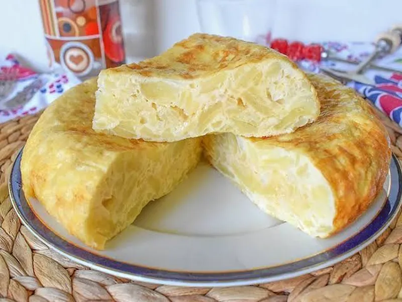
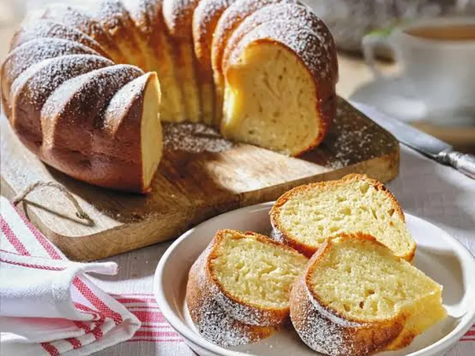

Recetas caseras, dulces y saladas
Entre sabores es un recetario para quien cocina en casa: platos salados de sartén y de cuchara, y dulces de horno de toda la vida. Todas las recetas llevan ingredientes fáciles de encontrar y los pasos numerados.
Recetas destacadas


Qué vas a encontrar
- Cuatro recetas: dos saladas y dos dulces.
- Una tabla con el tiempo y la dificultad de cada receta.
- Un formulario para proponer tus recetas.